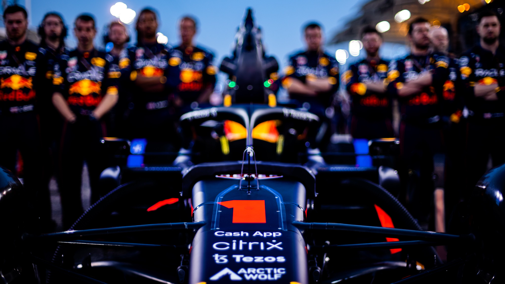

第2戦 サウジアラビアGP
決勝レース タイム比較
激戦再び…フェルスタッペン 0.5秒差でルクレールを撃破!!
2022シーズンFIA-F1世界選手権
第2戦サウジアラビアGP決勝レースが3月27日に行われ、
マックス・フェルスタッペン（レッドブル）がシャルル・ルクレール（フェラーリ）を
0.549秒で振り切り今季優勝を飾った。
予選4番グリッドのフェルスタッペンは1周目にカルロス・サインツ（フェラーリ）を追い抜き 3番手に浮上すると、ポールシッターの僚友セルジオ・ペレスが不運なタイミングでの
セーフティーカー（SC）導入により後退した事で2番手に浮上した。